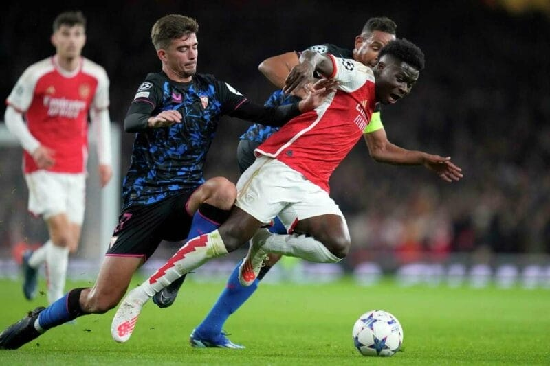

Tiền đạo người Brazil cho rằng Saka phải đãi mình 1 chầu vì đường kiến tạo thuận lợi dẫn đến bàn ấn định chiến
thắng trước Sevilla.
Arsenal đã trở lại mạnh mẽ sau thất bại trước Newcastle hồi cuối tuần. Pháo thủ có 90 phút tuyệt hay trước
Sevilla, ép đội bạn gần như không thể lên bóng. Đội chủ sân Emirates giành thắng lợi nhẹ nhàng 2-0 với các bàn
thắng của Trossard và Saka. Kết quả này giúp Arsenal chạm 1 tay vào vé đi tiếp. Sau trận đấu, Martinelli đã có
bài chia sẻ đầy thoải mái:
"Hôm nay chúng tôi thi đấu tốt và xứng đáng thắng. Cả tôi và Saka trận này đều đá hay, đó là những gì CĐV mong
chờ. Hôm nay, chúng tôi thi đấu với sự tự tin cao độ nhất. Tôi vui vì cả đội chiến thắng, cũng vui vì Saka ghi
bàn trận này. Tôi có nói với Saka rằng cậu ấy sẽ phải đãi tôi một bữa, vì đường kiến tạo ngày hôm nay.

Saka có 1 bàn và 1 kiến tạo trước Sevilla
Mỗi trận đấu, tôi muốn lên bóng càng nhanh càng tốt để có lợi thế trong những pha bóng một đối một với hậu vệ
đối phương. Đây là điều tôi muốn làm và tôi nghĩ cả đội biết điều đó. Thật tuyệt khi được thi đấu tại đây, trên
sân nhà với CĐV nhà. Chúng tôi luôn cố gắng hết sức trên sân để cho người hâm mộ thấy phẩm chất của mình và
giành chiến thắng dành tặng CĐV."
Với cá nhân Saka, đây là màn trình diễn ấn tượng giúp anh giải tỏa áp lực bủa vây thời gian qua. Saka đang có
chuỗi 3 trận không ghi bàn hoặc kiến tạo liên tiếp. Saka trở thành cầu thủ đầu tiên của Arsenal có bàn thắng và
kiến tạo ở hai trận sân nhà liên tiếp tại Champions League kể từ sau Fabregas ở mùa giải 2007/2008. Đồng thời,
Cầu thủ sinh năm 2001 đã góp dấu giày vào 5 bàn thắng tại Champions League mùa này, hơn bất cứ đồng hương người
Anh nào, kể cả Bellingham và Harry Kane.